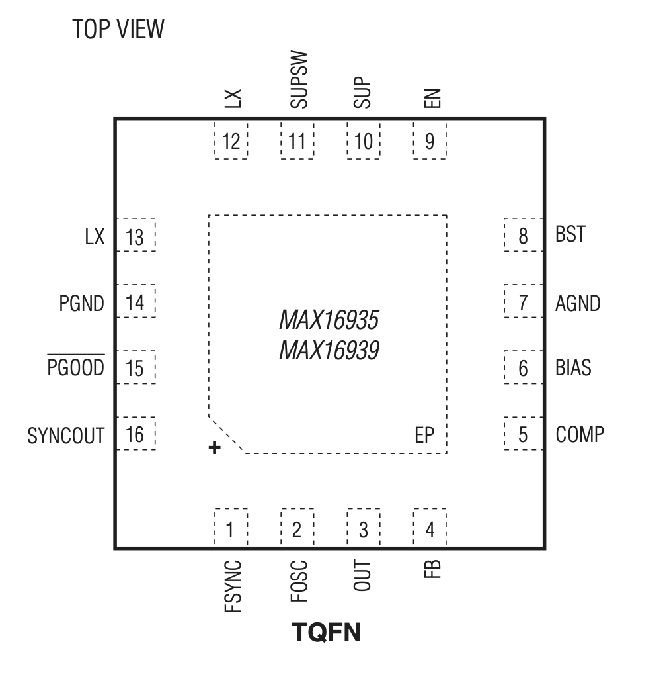
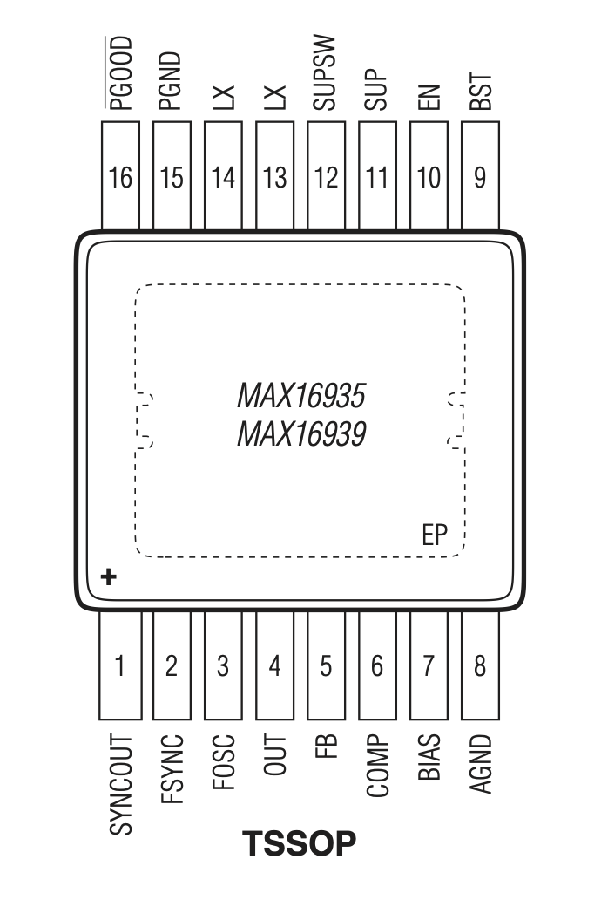

MAX16935 / MAX16939 TQFN

Pin Description
| PIN | NAME | FUNCTION |
|---|---|---|
| 16 | SYNCOUT | Open-Drain Clock Output. SYNCOUT outputs 180N out-of-phase signal relative to the internal oscillator. Connect to OUT with a resistor between 100I and 1kW for 2MHz operation. For low frequency operation, use a resistor between 1kW and 10kW. |
| 1 | FSYNC | Synchronization Input. The device synchronizes to an external signal applied to FSYNC. Connect FSYNC to AGND to enable skip mode operation. Connect to BIAS or to an external clock to enable fixed-frequency forced PWM mode operation. |
| 2 | FOSC | Resistor-Programmable Switching Frequency Setting Control Input. Connect a resistor from FOSC to AGND to set the switching frequency. |
| 3 | OUT | Switching Regulator Output. OUT also provides power to the internal circuitry when the output voltage of the converter is set between 3V to 5V during standby mode. |
| 4 | FB | Feedback Input. Connect an external resistive divider from OUT to FB and AGND to set the output voltage. Connect to BIAS to set the output voltage to 5V. |
| 5 | COMP | Error Amplifier Output. Connect an RC network from COMP to AGND for stable operation. See the Compensation Network section for more information. |
| 6 | BIAS | Linear Regulator Output. BIAS powers up the internal circuitry. Bypass with a 1FF capacitor to ground. |
| 7 | AGND | Analog Ground |
| 8 | BST | High-Side Driver Supply. Connect a 0.1FF capacitor between LX and BST for proper operation. |
| 9 | EN | SUP Voltage Compatible Enable Input. Drive EN low to disable the device. Drive EN high to enable the device. |
| 10 | SUP | Voltage Supply Input. SUP powers up the internal linear regulator. Bypass SUP to PGND with a 4.7FF ceramic capacitor. It is recommended to add a placeholder for an RC filter to reduce noise on the internal logic supply |
| 11 | SUPSW | Internal High-Side Switch Supply Input. SUPSW provides power to the internal switch. Bypass SUPSW to PGND with 0.1FF and 4.7FF ceramic capacitors. |
| 12,13 | LX | Inductor Switching Node. Connect a Schottky diode between LX and AGND. |
| 14 | PGND | Power Ground |
| 15 | PGOOD | Open-Drain, Active-Low Power-Good Output. PGOOD asserts when VOUT is above 95% regulation point. PGOOD goes low when VOUT is below 92% regulation point. |
| - | EP | Exposed Pad. Connect EP to a large-area contiguous copper ground plane for effective power dissipation. Do not use as the only IC ground connection. EP must be connected to PGND. |
MAX16935 / MAX16939 TSSOP

Pin Description
| PIN | NAME | FUNCTION |
|---|---|---|
| 1 | SYNCOUT | Open-Drain Clock Output. SYNCOUT outputs 180N out-of-phase signal relative to the internal oscillator. Connect to OUT with a resistor between 100I and 1kW for 2MHz operation. For low frequency operation, use a resistor between 1kW and 10kW. |
| 2 | FSYNC | Synchronization Input. The device synchronizes to an external signal applied to FSYNC. Connect FSYNC to AGND to enable skip mode operation. Connect to BIAS or to an external clock to enable fixed-frequency forced PWM mode operation. |
| 3 | FOSC | Resistor-Programmable Switching Frequency Setting Control Input. Connect a resistor from FOSC to AGND to set the switching frequency. |
| 4 | OUT | Switching Regulator Output. OUT also provides power to the internal circuitry when the output voltage of the converter is set between 3V to 5V during standby mode. |
| 5 | FB | Feedback Input. Connect an external resistive divider from OUT to FB and AGND to set the output voltage. Connect to BIAS to set the output voltage to 5V. |
| 6 | COMP | Error Amplifier Output. Connect an RC network from COMP to AGND for stable operation. See the Compensation Network section for more information. |
| 7 | BIAS | Linear Regulator Output. BIAS powers up the internal circuitry. Bypass with a 1FF capacitor to ground. |
| 8 | AGND | Analog Ground |
| 9 | BST | High-Side Driver Supply. Connect a 0.1FF capacitor between LX and BST for proper operation. |
| 10 | EN | SUP Voltage Compatible Enable Input. Drive EN low to disable the device. Drive EN high to enable the device. |
| 11 | SUP | Voltage Supply Input. SUP powers up the internal linear regulator. Bypass SUP to PGND with a 4.7FF ceramic capacitor. It is recommended to add a placeholder for an RC filter to reduce noise on the internal logic supply |
| 12 | SUPSW | Internal High-Side Switch Supply Input. SUPSW provides power to the internal switch. Bypass SUPSW to PGND with 0.1FF and 4.7FF ceramic capacitors. |
| 13,14 | LX | Inductor Switching Node. Connect a Schottky diode between LX and AGND. |
| 15 | PGND | Power Ground |
| 16 | PGOOD | Open-Drain, Active-Low Power-Good Output. PGOOD asserts when VOUT is above 95% regulation point. PGOOD goes low when VOUT is below 92% regulation point. |
| - | EP | Exposed Pad. Connect EP to a large-area contiguous copper ground plane for effective power dissipation. Do not use as the only IC ground connection. EP must be connected to PGND. |